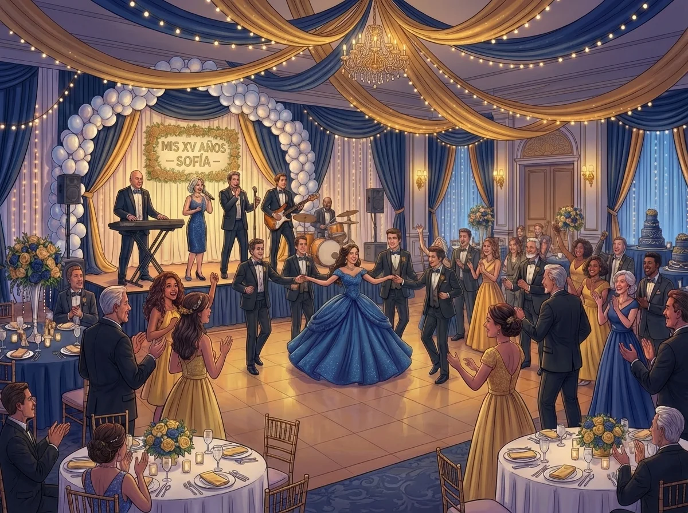

Contratar música en vivo para unos XV años en la Ciudad de México es una inversión significativa que impacta directamente en la experiencia del evento. A diferencia de un DJ o música pregrabada, un grupo musical en vivo ofrece presencia escénica, capacidad de adaptación y conexión emocional que no puede replicarse con pistas.
Sin embargo, no todos los grupos musicales tienen la experiencia, versatilidad y profesionalismo necesarios para un evento de XV años. Este artículo ofrece criterios técnicos y prácticos para tomar una decisión informada al contratar música en vivo.
Aspectos a considerar al contratar un grupo musical
1. Experiencia específica en XV años
Un grupo musical puede ser excelente en bodas o eventos corporativos, pero los XV años tienen protocolos y momentos específicos que requieren experiencia particular.
Qué verificar:
- Portafolio con eventos de XV años previos
- Videos de ejecución de vals y momentos protocolarios
- Referencias de clientes anteriores
- Conocimiento de protocolos tradicionales de XV años
2. Versatilidad del repertorio
Un evento de XV años requiere cubrir desde música clásica para la entrada hasta reggaetón para la fiesta. El grupo debe demostrar versatilidad real, no solo promesas.
Géneros que debe dominar:
- Música clásica y vals tradicional
- Baladas románticas en español e inglés
- Cumbia, salsa y música tropical
- Pop y rock en español e inglés
- Reggaetón y música urbana actual
- Música regional mexicana
3. Capacidad técnica del líder musical
El líder del grupo (generalmente el tecladista y solista) es quien coordina la ejecución musical y se adapta a cambios en tiempo real. Su capacidad técnica es determinante.
Habilidades clave:
- Dominio del teclado como instrumento armónico central
- Capacidad vocal para ejecutar diferentes géneros
- Experiencia en coordinación de momentos protocolarios
- Habilidad para ajustar tempo y arreglos en tiempo real
- Comunicación efectiva con el coordinador del evento
4. Equipo técnico y de audio
La calidad del equipo de audio es tan importante como la calidad de los músicos. Un grupo profesional debe incluir equipo técnico adecuado.
Equipo mínimo requerido:
- Sistema de PA con potencia adecuada para el tamaño del salón
- Monitores de escenario para los músicos
- Consola de mezclas profesional
- Micrófonos de calidad para voces e instrumentos
- Iluminación básica de escenario
- Equipo de respaldo para contingencias
5. Número de músicos y formación
El número de músicos impacta tanto en el costo como en la calidad del sonido. Para XV años en la CDMX, el formato más eficiente es el grupo versátil de 4-6 músicos.
Formación típica de grupo versátil:
- Tecladista y solista (líder)
- Bajista
- Baterista
- Guitarrista o saxofonista
- Vocalista adicional (opcional)
Requisitos técnicos del venue
Antes de contratar un grupo musical, es importante confirmar que el venue cumple con los requisitos técnicos necesarios.
Espacio
- Área de escenario mínima: 4x3 metros para grupo de 4-6 músicos
- Altura del techo: Mínimo 2.5 metros
- Acceso para carga y descarga de equipo
Electricidad
- Potencia disponible: Mínimo 3000W
- Circuitos dedicados para equipo de audio
- Tomas de corriente cerca del área de escenario
- Tierra física en el sistema eléctrico
Acústica
- Evaluar reverberación y eco del espacio
- Considerar tratamiento acústico si es necesario
- Verificar restricciones de volumen del venue
Checklist para contratar un grupo musical
Antes de contratar
- ☐ Solicitar videos de eventos de XV años previos
- ☐ Verificar experiencia específica en XV años
- ☐ Confirmar versatilidad del repertorio
- ☐ Revisar referencias de clientes anteriores
- ☐ Confirmar equipo técnico incluido en el servicio
- ☐ Verificar número de músicos y formación
- ☐ Solicitar cotización detallada con todos los servicios incluidos
Durante la contratación
- ☐ Establecer contrato con términos claros
- ☐ Definir repertorio para momentos protocolarios
- ☐ Confirmar tiempos de montaje y prueba de sonido
- ☐ Establecer canal de comunicación directo con el líder del grupo
- ☐ Confirmar política de cancelación y reembolsos
- ☐ Verificar seguro de responsabilidad civil del grupo
Antes del evento
- ☐ Reunión de coordinación 2-3 semanas antes del evento
- ☐ Confirmar canciones específicas para entrada y vals
- ☐ Proporcionar cronograma detallado del evento
- ☐ Confirmar requerimientos técnicos del venue
- ☐ Establecer señales de coordinación para momentos clave
Errores comunes al contratar música en vivo
- Elegir solo por precio sin evaluar experiencia y calidad
- No verificar videos de eventos previos
- No confirmar versatilidad real del repertorio
- Omitir la revisión de referencias de clientes anteriores
- No establecer contrato con términos claros
- No coordinar con anticipación las canciones para momentos protocolarios
Preguntas frecuentes
¿Cuánto cuesta contratar un grupo musical para XV años en CDMX?
Los precios varían según el número de músicos, duración del evento y equipo técnico
incluido. Un grupo versátil profesional de 4-6 músicos puede costar entre $15,000 y
$35,000 MXN para un evento de 4-5 horas.
¿El grupo puede aprender canciones específicas?
Sí, un grupo profesional puede aprender canciones específicas con anticipación
suficiente (2-3 semanas). Es importante comunicar estas solicitudes durante la
planeación.
¿Qué incluye el servicio de un grupo musical?
Típicamente incluye músicos, equipo de audio, iluminación básica, montaje y desmontaje.
Es importante confirmar todos los servicios incluidos en la cotización.
¿Es necesario contratar un técnico de sonido adicional?
Para eventos de hasta 200 personas, el líder del grupo generalmente puede manejar el
sonido. Para eventos más grandes, es recomendable un técnico dedicado.
Contratar música en vivo para unos XV años en la CDMX requiere evaluar experiencia, versatilidad, capacidad técnica y profesionalismo del grupo musical. El formato de grupo versátil universal, liderado por un tecladista experto, ofrece la solución más completa para garantizar el éxito musical en todas las fases del evento.
Encuentre el grupo musical profesional ideal para sus XV años aquí.